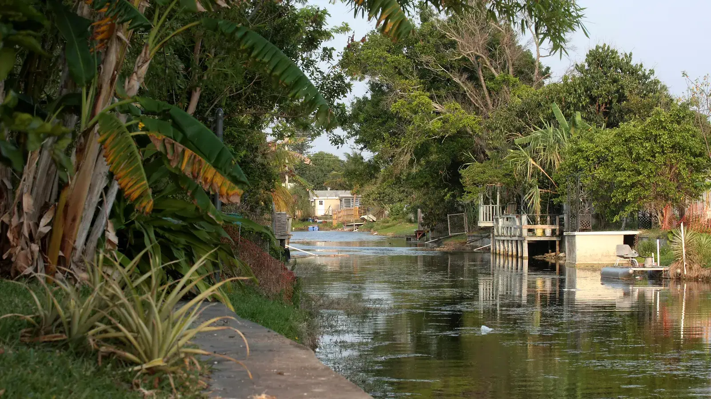

Margate, FL homes for sale are mostly inland single-family houses, condos and townhomes, and they're often priced below the beach cities nearby. That makes Margate worth a look if you want to stay in Broward County on a tighter budget. Rui Cunha's office in Deerfield Beach is nearby, and he helps buyers compare Margate against the surrounding cities.
What it's like to live in Margate
Margate is a residential city in inland Broward County, next to Coconut Creek. Florida's Office of Economic and Demographic Research estimated its population at 58,725 as of April 2024 (Florida EDR). It's known as one of the more affordable parts of inland Broward, with family neighborhoods and plenty of condo communities (Landmark Signature Realty). Life here is suburban and car-based: you trade the beach at your doorstep for more home for the money.
Types of homes in Margate
We'd rather not name neighborhoods we haven't verified, so here is what you'll find by type. One local brokerage describes Margate's single-family homes as typically $320K to $650K, and condos and townhomes from around $200K (Landmark Signature Realty).
- Single-family homes. The main choice for families who want a yard. Check the roof age, the A/C and the windows, since these affect both your repair budget and your insurance quote.
- Condos and townhomes. The lower-cost entry point. Many are in older complexes, so the condo notes below matter a lot.
- 55+ and age-restricted communities. Some condo communities have age rules. Always confirm the rules before you fall in love with a unit.
Rui can show you specific communities once he knows your budget and what you need.
Margate market snapshot
According to Resideline, the median sale price in Margate was about $260,000 in August 2026, based on 359 closings over six months, with values up about 0.6% from a year earlier (Resideline). Trulia showed a median of about $319,000 in March 2026 (Trulia), and Redfin's last figure we could confirm was about $320,000 in February 2025 (Redfin).
These sources use different methods and different mixes of condos and houses, which is why they don't match. A fair reading is that the overall median sits somewhere in the $260K to $320K range, but a house and a condo are very different purchases. Ask Rui for a current comparison of recent sales for the exact type of home you want.
Practical notes: older condos, insurance and flood
Older condos. Florida's 2022 condo safety law requires milestone inspections for buildings of three or more stories (at 30 years for inland buildings, then every 10 years) and a Structural Integrity Reserve Study with funded reserves (Rimkus). A 2025 update allowed associations to fund reserves through special assessments, loans or credit lines with owner approval. Special assessments from $10,000 to over $100,000 have been reported in older communities (24-7 Press Release). In a city with many older condos, ask for the reserve study, the budget and the assessment history before you offer. A low price can hide a big bill.
Flood and insurance. Margate is inland, so flood exposure is generally lower than on the coast. FEMA's newer pricing raised flood premiums most in coastal Broward and Palm Beach, while inland areas stayed roughly stable (WLRN). Still, check the flood zone for each address and get a homeowners insurance quote before signing. Citizens policyholders must carry flood coverage as that requirement phases in through 2027 (News4JAX).
Homestead. If the home will be your primary residence, you may qualify for Florida's homestead exemption, which also caps yearly increases in assessed value (Palm Beach County presentation). Ask a CPA how it applies to you.
Schools
Margate is served by Broward County Public Schools. Use the district's school locator to confirm assigned schools for any address, and check school grades with the Florida Department of Education before you decide.
Getting around
Margate is an inland, car-dependent city next to Coconut Creek, with the beach cities to the east. Commute times change a lot with traffic, so drive your route at rush hour before choosing a home.
Working with Rui in Margate
Rui has worked in South Florida real estate since 2003, as a mortgage broker, a broker and a licensed General Contractor, which helps when you're weighing an older home or condo that may need work. He can help you buy a home, explain an ITIN mortgage or sell your home. Try the mortgage calculator, and compare Margate with Coconut Creek and Pompano Beach.
FAQ
Is Margate, FL affordable?
Compared with the beach cities nearby, it's often a lower-cost option. Resideline reported a median of about $260,000 in August 2026, and Trulia showed about $319,000 in March 2026. The difference comes from the mix of condos and houses, so compare recent sales for the home type you want.
What should I watch for with Margate condos?
Older buildings may face higher fees or special assessments under Florida's condo safety rules. Ask for the reserve study, the budget, the inspection status and the assessment history before you make an offer.
Is Margate in a flood zone?
Margate is inland, so flood exposure is generally lower than on the coast, but it depends on the exact address. Check the flood zone and get an insurance quote for each property.
Can I buy in Margate without a Social Security number?
Many buyers use an ITIN mortgage, subject to lender approval. See our ITIN mortgage guide or contact Rui.
Talk to Rui
Looking at Margate? Ask Rui for a current comparison of recent sales before you make an offer.